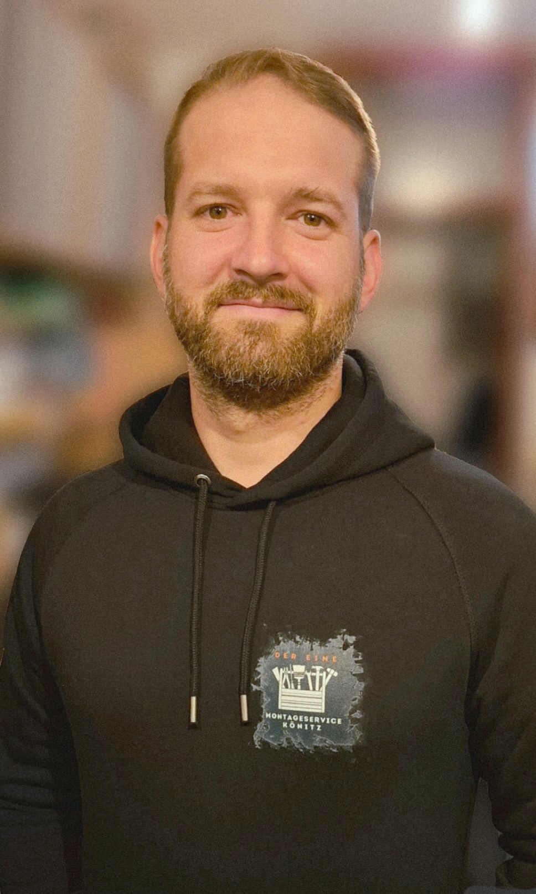

Montageprofi aus Castrop-Rauxel, Handwerker aus Leidenschaft – und ein Typ, der auch beim 50. Schrank noch gut drauf ist.

Ich heiße Thomas, die meisten nennen mich Charlie. Aber das ist eine andere Geschichte. Ich bin Ihr Montageprofi aus Castrop-Rauxel. Seit Jahren bin ich in ganz Nordrhein-Westfalen unterwegs, um Möbel aufzubauen, Küchen zu montieren und alles an die Wand zu bringen, was an die Wand gehört.
Handwerk ist für mich keine Pflicht – es macht mir wirklich Spaß. Wenn am Ende alles steht, die Küche passt und der Kunde strahlt, dann ist das für mich der beste Teil des Tages. Kein Auftrag ist zu klein, kein Schrank zu groß.
„Ich komme, ich schraube, ich lache – und am Ende steht Ihr Schrank genauso, wie er stehen soll. Das ist mein Versprechen."
— Thomas Könitz
Was mich von anderen unterscheidet? Ich nehme meinen Job ernst – aber mich selbst nicht zu ernst. Freundlichkeit, Pünktlichkeit und ehrliche Preise sind für mich keine Extras, sondern Selbstverständlichkeiten.
Ich sage, wann ich komme – und ich komme. Ihre Zeit ist genauso wertvoll wie meine.
Kein Teil bleibt übrig. Ich arbeite präzise und achte auf jedes Detail, auch hinter dem Schrank.
Was ich anbiete, das halte ich auch. Transparente Preise, keine versteckten Kosten.
Handwerk muss nicht langweilig sein. Mit mir ist der Montagetag ein entspannter Tag.